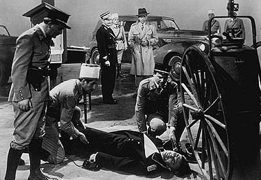
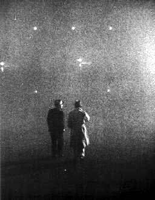

|

Texto de
Susana
Lopes de Alexandria

Ttulo
foi tirado de "Casablanca" (10)

|
 Rick havia renunciado ao seu amor por Ilsa em nome de algo maior: a luta para enfrentar o nazismo. Ele sabia que Laszlo precisava da esposa para continuar seu trabalho. O avio est partindo quando chega Strasser, o major alemo. Renault informa que Laszlo est naquele avio. Strasser tenta fazer uma ligao para alertar os alemes, mas Rick o ameaa com a arma. Strasser tenta pegar seu revlver para atirar em Rick, mas Rick atira primeiro e mata o major. Em seguida, chega a polcia. Rick pensa que Renault ir denunci-lo, mas Renault diz aos policiais: "Atiraram no major. Prendam os suspeitos de sempre". Rick ento percebe que Renault no colabora com os alemes.  Rick e Renault observam o avio desaparecer por entre as nuvens. Os dois caminham calmamente na pista de decolagem. Segue o dilogo final do filme. Renault: "Acho que melhor voc desaparecer de Casablanca por uns tempos. Existe uma guarnio militar francesa livre dos alemes em Brazzaville. Talvez eu consiga uma passagem". Rick: "Um salvo-conduto para mim? Seria bom eu fazer uma pequena viagem. Mas no pense que me esqueci da nossa aposta. Voc ainda me deve 10 mil francos". Renault: "E 10 mil francos cobririam nossas despesas". Rick: "Nossas despesas?" Renault: Hum, hum... Rick: "Louis, acho que este o incio de uma bela amizade". The End |